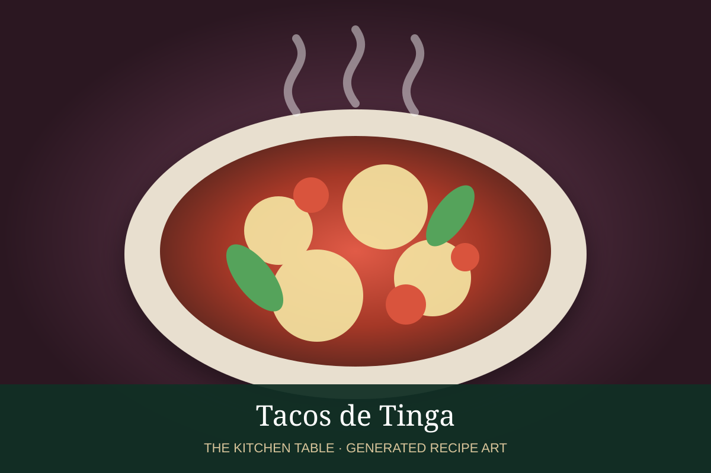

← Back to all recipes
CHICKEN · MEXICAN
Tacos de Tinga
Smoky shredded chicken tinga with tomato, onion, and chipotle served in warm corn tortillas.
45 minMakes 12 tacos

Photo: Mexico in My Kitchen
Ingredients
- 3 cups prepared tinga de pollo
- 12 corn tortillas
- Shredded lettuce or cabbage, optional
- Sliced avocado
- Mexican crema
- Queso fresco
- Sliced onion
- Lime wedges
Preparation
- Warm the prepared tinga gently until hot and juicy.
- Warm corn tortillas on a dry skillet.
- Fill each tortilla with tinga.
- Top with avocado, crema, queso fresco, and onion if desired.
- Serve with lime.